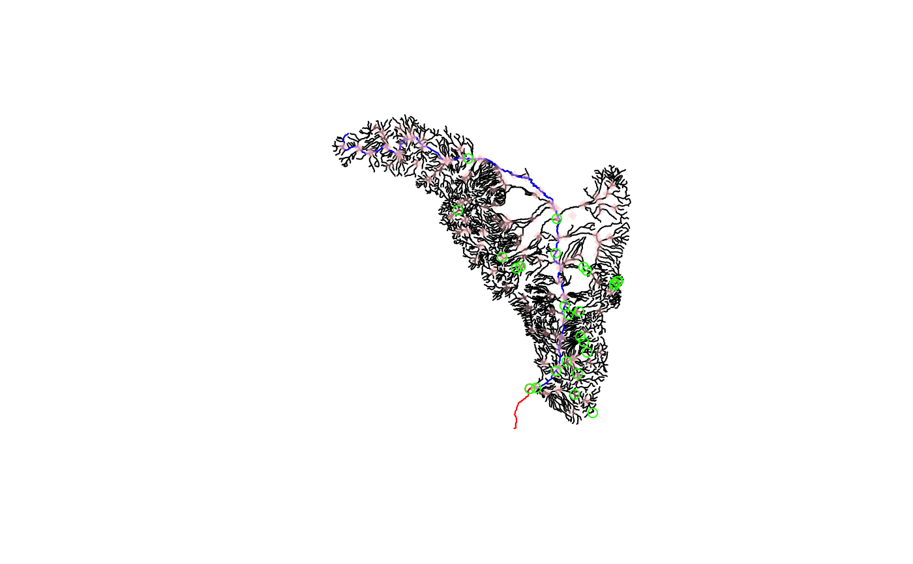

Navigate the Network Linked Data Index network.
navigate_nldi(nldi_feature, mode = "upstreamMain", data_source = "comid", distance_km = NULL, tier = "prod")
| nldi_feature | list with names `featureSource` and `featureID` where `featureSource` is derived from the "source" column of the response of discover_nldi_sources() and the `featureSource` is a known identifier from the specified `featureSource`. |
|---|---|
| mode | character chosen from names, URLs, or url parameters returned by discover_nldi_navigation(nldi_feature). See examples. |
| data_source | character chosen from "source" column of the response of discover_nldi_sources() or empty string for flowline geometry. |
| distance_km | numeric distance in km to stop navigating. |
| tier | character optional "prod" or "test" |
sf data.frame with result
#> source #> 1 comid #> 2 huc12pp #> 3 npdes_rad #> 4 nwissite #> 5 wqp #> sourceName #> 1 NHDPlus comid #> 2 HUC12 Pour Points #> 3 EPA Office of Water (OW): Facilities that Discharge to Water NHDPlus Indexed Dataset #> 4 NWIS Sites #> 5 Water Quality Portal #> features #> 1 https://cida.usgs.gov/nldi/comid #> 2 https://cida.usgs.gov/nldi/huc12pp #> 3 https://cida.usgs.gov/nldi/npdes_rad #> 4 https://cida.usgs.gov/nldi/nwissite #> 5 https://cida.usgs.gov/nldi/wqpnldi_nwis <- list(featureSource = "nwissite", featureID = "USGS-08279500") nav_options <- discover_nldi_navigation(nldi_nwis) nav_options#> $upstreamMain #> [1] "https://cida.usgs.gov/nldi/nwissite/USGS-08279500/navigate/UM" #> #> $upstreamTributaries #> [1] "https://cida.usgs.gov/nldi/nwissite/USGS-08279500/navigate/UT" #> #> $downstreamMain #> [1] "https://cida.usgs.gov/nldi/nwissite/USGS-08279500/navigate/DM" #> #> $downstreamDiversions #> [1] "https://cida.usgs.gov/nldi/nwissite/USGS-08279500/navigate/DD" #>navigate_nldi(nldi_feature = nldi_nwis, mode = "upstreamTributaries", data_source = "") %>% st_geometry() %>% plot()navigate_nldi(nldi_feature = nldi_nwis, mode = "UM", data_source = "") %>% st_geometry() %>% plot(col = "blue", add = TRUE)navigate_nldi(nldi_feature = nldi_nwis, mode = nav_options[["downstreamMain"]], data_source = "", distance_km = 40) %>% st_geometry() %>% plot(col = "red", add = TRUE)navigate_nldi(nldi_feature = nldi_nwis, mode = "UM", data_source = "nwissite", distance_km = 0) %>% st_geometry() %>% plot(col = "red", add = TRUE)navigate_nldi(nldi_feature = nldi_nwis, mode = "UT", data_source = "huc12pp") %>% st_geometry() %>% plot(col = rgb(255, 205, 205, 100, maxColorValue = 255), pch = 18, add = TRUE)nwissite <- navigate_nldi(nldi_feature = nldi_nwis, mode = "UT", data_source = "nwissite") st_geometry(nwissite) %>% plot(col = "green", add = TRUE)nwissite#> Simple feature collection with 26 features and 7 fields #> geometry type: POINT #> dimension: XY #> bbox: xmin: -106.5442 ymin: 36.05003 xmax: -105.2547 ymax: 37.68861 #> epsg (SRID): 4326 #> proj4string: +proj=longlat +datum=WGS84 +no_defs #> # A tibble: 26 x 8 #> source sourceName identifier name uri comid navigation #> <chr> <chr> <chr> <chr> <chr> <chr> <chr> #> 1 nwiss… NWIS Sites USGS-0826… RIO … http… 1786… https://c… #> 2 nwiss… NWIS Sites USGS-0825… CASI… http… 1786… https://c… #> 3 nwiss… NWIS Sites USGS-0826… RED … http… 1786… https://c… #> 4 nwiss… NWIS Sites USGS-0825… SANT… http… 1786… https://c… #> 5 nwiss… NWIS Sites USGS-0826… RIO … http… 1786… https://c… #> 6 nwiss… NWIS Sites USGS-0824… CONE… http… 1787… https://c… #> 7 nwiss… NWIS Sites USGS-0827… RIO … http… 1786… https://c… #> 8 nwiss… NWIS Sites USGS-0824… SAN … http… 1787… https://c… #> 9 nwiss… NWIS Sites USGS-0827… RIO … http… 1786… https://c… #> 10 nwiss… NWIS Sites USGS-0825… COST… http… 1786… https://c… #> # ... with 16 more rows, and 1 more variable: geometry <POINT [°]>